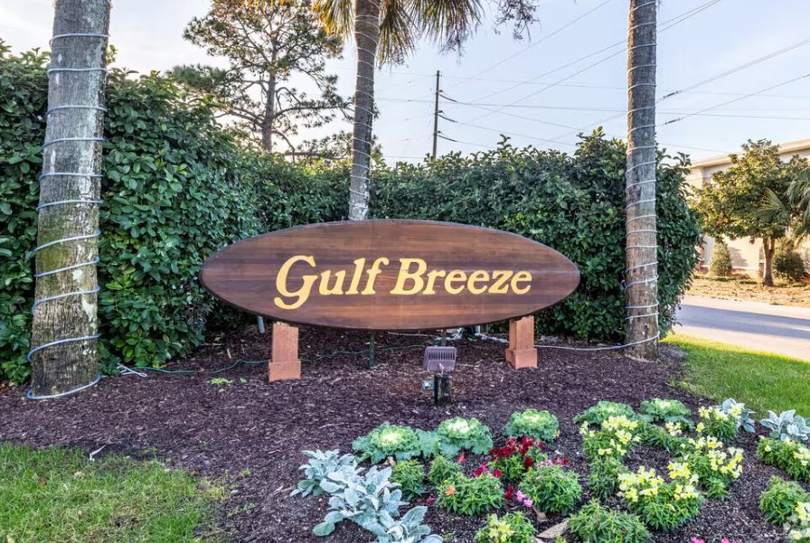

Jeffrey Bowman
for Gulf Breeze City Council Seat D · November 3, 2026
Gulf Breeze is a small city. City Hall should act like one.
I’m Jeff Bowman. I’m asking for your vote on November 3. The work is local. Streets. Water. Sewer. Septic. Storms. A budget you can read.
Honesty. Integrity. Transparency.
Volunteer or ask a questionFour things I will show up for
- Competent local governmentDo the job. Say what you know. Fix what is broken.
- Infrastructure that worksWhen you turn on the tap. When the rain comes.
- Honest budgetsIf it costs money, we say how much and why.
- Homeowners and a city that stays our sizeMost of us are trying to keep a house and a street we care about.
If you have a question, ask me. I’ll answer it like a neighbor.